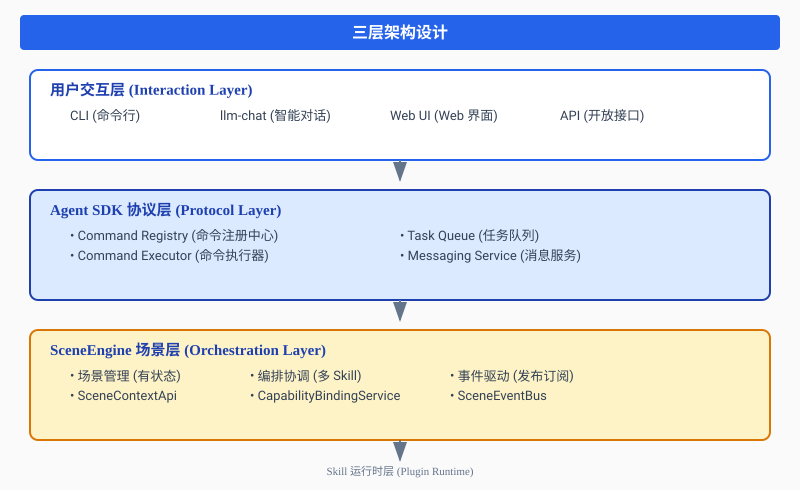
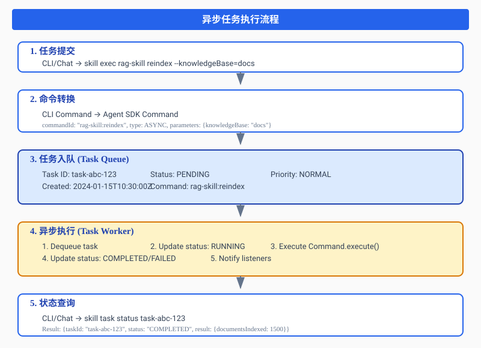
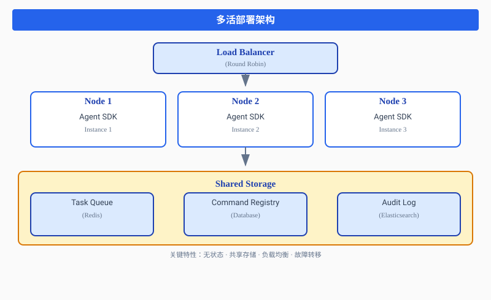

导读：我们将深入剖析 Ooder Agent SDK 的 Command 体系、异步任务机制、多活部署架构，以及 SceneEngine 如何通过这些核心能力实现场景驱动的 CLI 设计。文章包含完整的实操案例、落地细节和与主流 CLI 工具的对比分析。
引言：为什么需要重新设计 CLI 支持
1.1 GUI 的困境与 CLI 的复兴
在过去的四十年里，图形用户界面（GUI）一直是软件交互的主流。然而，随着软件系统复杂度的指数级增长，GUI 的局限性日益凸显：
| 痛点 | 具体表现 | 影响 |
|---|---|---|
| 操作效率低下 | 完成复杂任务需多次点击、切换界面 | 用户学习成本高，操作时间长 |
| 自动化困难 | GUI 操作难以脚本化、自动化 | 无法集成到 DevOps 流程 |
| 远程管理受限 | 服务器、容器环境难以部署 GUI | 运维成本高 |
| 版本控制缺失 | GUI 配置无法像代码一样版本化 | 配置管理混乱 |
与此同时，CLI 正在经历一场复兴。从 kubectl 到 aws-cli，从 docker 到 terraform，现代 DevOps 工具链几乎都以 CLI 为核心。
1.2 Ooder 的 CLI 设计哲学
Ooder Skills 框架的 CLI 设计不是简单的命令工具，而是"场景驱动，命令即服务"的完整架构：
# 传统 CLI - 直接操作底层资源
kubectl get pods
aws s3 ls
docker ps
# Ooder CLI - 场景驱动的能力调用
skill scene create --type=meeting --participants=user1,user2
skill scene invoke my-scene rag-skill:search --query="项目进度"
skill exec rag-skill reindex --knowledgeBase=docs核心差异：
- 有抽象层：CLI 不直接操作 Skill，而是通过 Agent SDK 和 SceneEngine 间接操作
- 可组合：多个 Skill 可以在场景中组合协作
- 有上下文：场景维护状态，命令可以复用上下文
- 异步化：长时间运行的任务通过异步机制处理
第一章：整体架构与 SceneEngine 定位
1.1 三层架构设计

1.2 SceneEngine 与 Agent SDK 的职责边界
| 特性 | Agent SDK | SceneEngine |
|---|---|---|
| 状态管理 | 无状态 | 有状态（场景状态、参与者状态） |
| 编排能力 | 无编排（原子操作） | 场景级编排（多 Skill 协作） |
| 职责范围 | 协议层原子操作 | 业务层协调 |
| 扩展方式 | 水平扩展（多活部署） | 垂直扩展（场景复杂度） |
| CLI 支持 | 提供 Command 通道 | 提供场景上下文和编排能力 |
关键设计原则：
- Agent SDK：专注于提供无状态、原子化、异步化的命令执行机制
- SceneEngine：在 Agent SDK 之上提供有状态的场景编排能力
- CLI：通过 Agent SDK 访问底层能力，通过 SceneEngine 访问场景能力
第二章：Agent SDK 核心机制深度解析
2.1 Command 体系设计
2.1.1 Command 接口定义
/**
* Command 接口 - Agent SDK 的核心抽象
*/
public interface Command<R> {
/**
* 命令唯一标识
* 格式规范：skill-id:command-name
*/
String getCommandId();
CommandType getType();
R execute(CommandContext context);
default boolean isAsync() {
return false;
}
default long getTimeout() {
return 30000L; // 默认 30 秒
}
}2.1.2 Command ID 设计规范
格式：{skill-id}:{command-name}
示例：
- rag-skill:reindex # RAG 技能 - 重建索引
- rag-skill:search # RAG 技能 - 搜索
- chart-skill:refresh # 图表技能 - 刷新
- db-skill:migrate # 数据库技能 - 迁移
约束：
1. skill-id 必须全局唯一（避免冲突）
2. command-name 使用小写字母和连字符
3. 避免使用特殊字符（: 以外的符号）
4. 版本兼容策略：command-name 不变，skill-id 带版本号2.2 异步任务机制
2.2.1 异步任务执行流程

2.2.2 重试策略与超时配置
落地建议值：
// 重试策略配置（推荐值）
最大重试次数：3 次（避免无限重试）
重试退避算法：指数退避（1s, 2s, 4s, 8s...）
初始间隔：1000ms
最大间隔：60000ms
// 超时配置（按任务类型）
快速任务（< 5 秒）：5000L
普通任务（30 秒）：30000L
长时间任务（5 分钟）：300000L
超长时间任务（30 分钟）：1800000L
// 实际配置示例
RAG 索引重建：600000L (10 分钟)
数据库迁移：1800000L (30 分钟)
图表生成：30000L (30 秒)
知识检索：5000L (5 秒)2.3 多活部署架构
2.3.1 多活部署架构

第三章：SceneEngine 3.0.3 的 CLI 支持机制
3.1 CLI 与 SceneEngine 的集成架构
CLI 层负责用户交互、权限校验、命令转换和结果格式化。Agent SDK 层提供协议封装、任务调度、状态管理和多活支持。SceneEngine 层提供场景编排、状态维护、事件驱动和权限控制。
3.2 SceneContextApi 核心接口
public interface SceneContextApi {
String getSceneGroupId();
String getSceneType();
String getSkillId();
Object getConfig(String key);
void setConfig(String key, Object value);
Object invokeCapability(String capabilityId, Map<String, Object> params);
List<ParticipantInfo> getParticipants();
void publishEvent(String eventType, Map<String, Object> data);
// SceneEngine 3.0.3 新增的 CLI 支持方法
SceneStatus getStatus();
List<String> getActiveSkills();
boolean isSkillActive(String skillId);
CommandResult executeCommand(String commandId, Map<String, Object> params);
List<NlpCapability> getAvailableNlpCapabilities();
}第四章：实操案例与端到端场景
4.1 案例一：创建会议场景并调用 RAG 技能
场景描述：创建一个项目会议场景，邀请团队成员，然后使用 RAG 技能检索项目文档。
# 1. 创建会议场景
$ skill scene create --type=meeting --participants=zhangsan,lisi,wangwu
{
"sceneGroupId": "scene-meeting-001",
"sceneType": "meeting",
"status": "CREATED"
}
# 2. 激活场景
$ skill scene activate scene-meeting-001
{
"sceneGroupId": "scene-meeting-001",
"status": "ACTIVE"
}
# 3. 在场景内调用 RAG 检索能力
$ skill scene invoke scene-meeting-001 rag-skill:search --query="项目进度报告" --limit=10
{
"results": [
{
"documentId": "doc-001",
"title": "2024 年 Q1 项目进度报告",
"score": 0.95
}
]
}
# 4. 使用 LLM 生成会议纪要
$ skill scene invoke scene-meeting-001 llm-skill:summarize --context="meeting"
{
"summary": "项目整体进度完成 75%...",
"keyPoints": ["进度完成 75%", "已完成需求分析"]
}4.2 案例二：异步执行 RAG 索引重建
# 1. 提交异步任务
$ skill exec rag-skill reindex --knowledgeBase=docs
{
"taskId": "task-reindex-20240115-001",
"status": "PENDING"
}
# 2. 查询任务状态
$ skill task status task-reindex-20240115-001
{
"taskId": "task-reindex-20240115-001",
"status": "RUNNING",
"progress": {
"current": 750,
"total": 1500,
"percentage": 50
}
}
# 3. 等待任务完成
$ skill task wait task-reindex-20240115-001 --timeout=300s
{
"taskId": "task-reindex-20240115-001",
"status": "COMPLETED",
"result": {
"documentsIndexed": 1500,
"timeElapsed": "2m30s"
}
}第五章：与主流 CLI 工具对比
5.1 功能对比表
| 特性 | kubectl | aws-cli | terraform | Ooder CLI |
|---|---|---|---|---|
| 抽象层级 | 资源级 | API 级 | 基础设施级 | 场景级 |
| 组合能力 | 弱 | 弱 | 中 | 强 |
| 异步支持 | 中 | 中 | 弱 | 强 |
| 场景编排 | ❌ | ❌ | ❌ | ✅ |
| 上下文持久化 | ❌ | ❌ | ✅ | ✅ |
| 命令发现性 | 中 | 弱 | 中 | 强 |
第六章：CLI 交互体验优化建议
6.1 上下文持久化
# 设置当前会话上下文
$ skill context set scene scene-meeting-001
Context set: scene=scene-meeting-001
$ skill context set output json
Context set: output=json
# 后续命令可以省略场景参数
$ skill invoke rag-skill:search --query="项目进度"
# 查看当前上下文
$ skill context show
Current Context:
- scene: scene-meeting-001
- output: json6.2 命令补全与提示
# 列出所有可用 Skills
$ skill skill list
# 查看 Skill 的可用命令
$ skill command list rag-skill
# 查看命令详细用法
$ skill command describe rag-skill:reindex第七章：监控与可观测性
7.1 监控指标
// 推荐的 Prometheus 指标
ooder_command_execution_total # Command 执行次数
ooder_command_execution_duration_seconds # 命令执行耗时
ooder_command_execution_errors_total # 命令执行错误数
ooder_task_queue_length # 任务队列长度
ooder_scene_active_count # 活跃场景数7.2 日志规范
// 结构化日志字段规范
必填字段：
- timestamp: 时间戳
- level: 日志级别
- traceId: 追踪 ID
- commandId: 命令 ID
- taskId: 任务 ID
- userId: 用户 ID
- action: 操作类型
- status: 状态
- durationMs: 耗时（毫秒）结语：CLI 设计的未来
Ooder Agent SDK 和 SceneEngine 3.0.3 的 CLI 支持设计，代表了一种新的软件交互范式：
核心创新点
- 场景驱动：从资源操作升级到场景编排，降低用户认知负担
- 异步原生：所有长时间任务都支持异步执行，提升用户体验
- 多层抽象：CLI → Agent SDK → SceneEngine → Skill，职责清晰
- 强发现性：命令可发现、可探索，降低学习成本
- 可观测性：全链路追踪、结构化日志、监控指标
- 插件化：第三方 Skill 可以无缝接入 CLI 体系
落地建议
- 标准化先行：先固化 Command 接口、CLI 语法、Skill 接入规范
- 核心场景验证：优先落地高频场景（文档检索、图表生成、智能对话）
- 用户体验迭代：通过用户反馈持续优化命令简洁度、响应速度、错误提示
未来展望
随着 LLM 能力的进一步集成，CLI 将变得更加智能：
- 自然语言转 CLI 命令：用户说"帮我创建会议场景"，自动生成 CLI 命令
- 智能命令推荐：根据用户历史行为推荐常用命令
- 自动化运维：结合 AI 实现故障自愈、性能优化
这，就是下一代软件的底层革命。